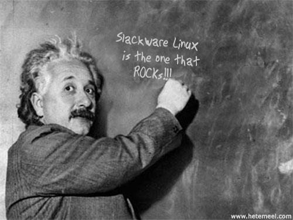

Free as in Freedom, Slack as in Slackware
December 26, 2006
Happy holidays for everybody having them! As a holiday gift, kernel 2.4.34 was released recently. Even in case you already know about the release, I suggest you read the announcement made by Willy Tarreau and ... find a name of a true slacker helping to maintain the kernel. :-)
[Mikhail]
December 2, 2006
Some time ago I asked a legendary AOLS regular (and, accidentally,
a musician) Loki Harfarg to tell me about
the gear used to record his latest album
"A Dirty Dozen".
If you have ever thought about playing in a rock band or having
a rock group of your own or just wondered if there is anything in common
between Music and Linux, you should definitely read Loki's story.
Here it comes:
Slack Rock Band in a Few Easy Steps.
Enjoy!
Thank you, Loki!
[Mikhail]
October 27, 2006
Notbob posted really exciting news: Patrick Volkerding gave a 129-minute phone interview to The Linux Link Tech Show. The interview can be found in the "Downloads:" section as Episode# 164 on 10-25-06 or downloaded directly from LinuxQuestions or another mirror (30Mb).

October 22, 2006
On October 3, SecurityFocus published an article Recent Security Enhancements in NetBSD by Elad Efrat. The article "presents the NetBSD philosophy on security, major design decisions, and its current security features." Though NetBSD-oriented, I think the article is actually of general interest.
On October 2, Daniel Drake released version 0.72 of the Writing udev rules HOWTO. Version 0.7 of the HOWTO was released earlier this year. It can be found in udev-097-i486-10.tgz, present in Slackware-11.0.
October 3, 2006
Congratulations to everybuddy! Slackware-11.0 was released on October 1!!
Happy Birthday, Slack!! And many happy returns!
September 30, 2006
The biggest surprise of the week was the discovery of http://slackware.tomsk.ru, a site of the Slackware LUG in Tomsk, a city in Siberia. The site is in Russian, but I am sure even a person who does not read Russian (yet) will appreciate the clean design of the site. Information on the site is interesting and up-to-date. Remarkably, every page has its own motto dedicated to Slackware. The one I liked most of all reads as "Slackware. The soul of my computer." All in all, this is the best Russian site devoted to Linux I have seen thus far.
The following articles attracted my attention during last couple of weeks. First, a couple of articles related to computer security:
- Six Tips to Protect Your Online Search Privacy, published by the Electronic Frontier Foundation, and
- Fear the Metasploit Framework, by Joe Barr (published by Linux.com). The article briefly covers a possible usage of the Metasploit Project, the goal of which "is to provide useful information to people who perform penetration testing, IDS signature development, and exploit research."
Another couple of articles reveal a number of tips that can be useful when working (having fun ;-)) in the CLI:
- UNIX productivity tips, by Michael Stutz (published by IBM's resource for developers), and
- Learning About Linux Commands, by Scott Granneman. This is a sample chapter of Linux Phrasebook.
The two articles are probably most useful for novices but perhaps an intermediate level user can will also find a couple of interesting tips.
Another interesting tutorial has been written by Grant Coady. This time, the document describes how one can make X applications running on a Slackware client be displayed on a windoze desktop. Those interested in the problem will probably also benefit from studying A Prisoner of Windows, by Lew Pitcher (published in Issue #129 of the Linux Gazette.)
[Mikhail]
September 22, 2006
Dear Slackers:
Hello and welcome!
We are glad to talk to you again, after a long time since the release of the fourth issue of The Slack World.
First of all, we are glad to tell you that the fifth issue is ready. We do hope that you will enjoy it, even though the issue is not as "thick" as the earlier ones (but that doesn't surely mean the content is any less rich than in the previous issues). And this is the reason why we are posting this announcement on the front page instead of on a separate "Editorial" page.
We are toying with plans to change the format of the project. On the one hand, preparing "full-blown" issues requires both quite a bit of time (that we just don't have) and interesting articles (that you don't write ;-)). On the other hand, we want to make the project "lively", and to provide links to articles and projects that we find interesting, and to possible comments on other issues that we find worth mentioning. No, we are not going to post links to everything that relates to Linux or Slackware but only to those resources that we find interesting. Neither we are going to turn the project into a blog. Besides this, we will publish featured articles as they arrive without postponing them till another issue. All this doesn't mean that we are dropping the initial idea of the project. We just adopt it to the ever-changing conditions of life. :-)
A few words about the latest changes. First, there is one new direction in the project called Slack Hearts. The point is that there are many very interesting persons among you, slackers, but the earlier "schedule" of releasing the issues didn't allow us to invite all of them to be our "Persona Grata". Thus, we decided to (temporarily) fill the gap this way. Temporarily, because we are going to invite many of the slackers to be our guests and to give us interviews, which will be published immediately.
Besides this, there are a number of new links in our SlackLinks list. The last minor change is that the earlier "Archive" section is renamed to "Issues".
Thanks to everybody for the kind words of support. Feedback and articles are always welcome!
We hope you will enjoy this installment of The Slack World. Till the next update, have a nice read.
Yours,
Editors of The Slack World
Ayaz Ahmed Khan
and Mikhail Zotov